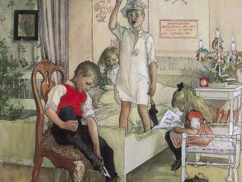
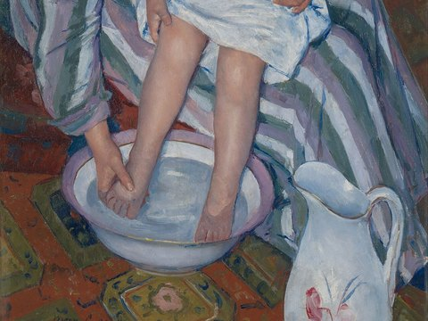
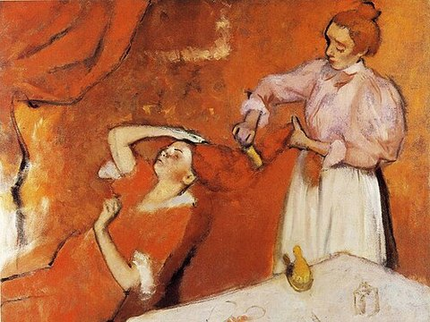
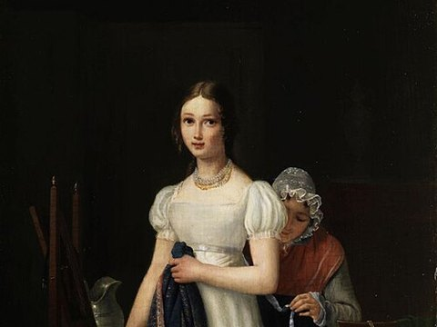
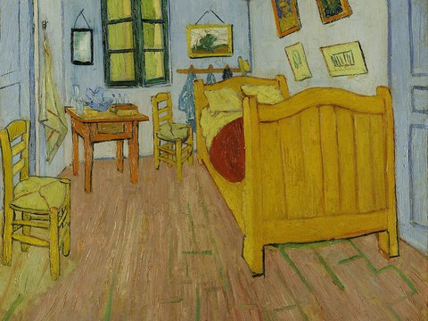
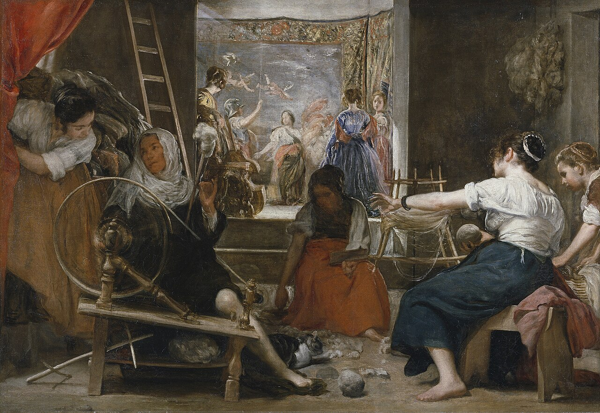

Optima Academy OnlineAn Education Experience Company
Spanish 1 ❖ Módulo 4 · La rutina diaria
Lesson 4.01 · Day 1 of 8
¿Cómo es tu día?
Words for Your Daily Routine · about 50 minutes
El cuadro del módulo: Diego Velázquez, Las hilanderas (The Spinners), about 1657
Quarter / ModuleQ3 · Módulo 4La rutina diaria
LessonLesson 4.01 · Day 1 of 8
TopicVerbos reflexivos (Set A)
Module ThemeDaily Routine
TODAY'S FOCUS
Welcome to Módulo 4. This module's big question: «¿Cómo es mi rutina diaria»? — What is my daily routine?
Every day you do a string of small actions to yourself — you wake up, you shower, you get dressed. Spanish has a special kind of verb for exactly these: the reflexive verb. Today we start with the easy half: the words themselves. There's no new grammar today on purpose — we're stocking up on eleven everyday actions so that tomorrow, when the little pronoun (me, te, se, nos) arrives, it has something real to attach to. Then you'll sail on to Ecuador, the country this module's reading takes you to.
BY THE END OF THIS LESSON YOU WILL BE ABLE TO…
1
I will be able to name eleven everyday routine actions in Spanish.
2
I will be able to recognize that these verbs end in -se because the action comes back to the person doing it.
3
I will be able to locate Ecuador and its capital, Quito, on the map and name its four regions.
IPARA EMPEZAR6 min
Walk through your morning
Before any Spanish, replay this morning in your head: the alarm, getting out of bed, the bathroom, getting dressed. Those are the actions this whole module is about. Notice that almost all of them are things you do to yourself — that little idea is the heart of what's coming.
💭 QUICK CHECK-IN · no wrong answer
What's the very first thing you do after you wake up?
IILAS ACCIONES DIARIAS15 min
Listen, then repeat
Click the 🔊 and say each verb back out loud. Notice every one ends in -se. That little tag means the action bounces back to you — lavar is to wash (something), but lavarse is to wash yourself. Learn each verb with its -se attached.
despertarseto wake up

levantarseto get up
ducharseto shower / take a shower

lavarseto wash (oneself / one's face)
cepillarseto brush (teeth / hair)

peinarseto comb / do one's hair
afeitarseto shave

vestirseto get dressed
ponerseto put on (clothing)
sentarseto sit down

acostarseto go to bed / lie down
⭐ PARA IR MÁS LEJOS · optional · +6 min
Act it out. Play each clip again and make the tiny gesture that goes with it — mime brushing your teeth for cepillarse, combing your hair for peinarse. Pairing a word with a movement is one of the fastest ways to make it stick.
❖En el cuadro · In the painting2 min
¿Qué acción es?
This is Diego Velázquez’s Las hilanderas (The Spinners), painted in Madrid about 1657: the painting at the top of this lesson. The women in front are preparing wool. Look at how they work: the woman at the spinning wheel, the woman in the middle and the young woman on the right. Which action from Part II fits all three?

La acción: …
One more look: the young woman on the right has neat hair, tied up with a white band. Which verb from Part II goes with her hair? (click for a hint)
Peinarse: to comb or do one’s hair. Before work, she did her hair. And look at the floor near the spinning wheel: a cat is curled up beside the balls of wool.
IIIA PRACTICAR12 min
Match the action
✅ TRY IT · which verb fits?
You step under the water in the morning. That action is:
✅ TRY IT · which verb fits?
It's the very end of the day and you climb into bed. That's:
✅ TRY IT · which verb fits?
You pick up a brush and fix your hair. That action is:
Your turn: what's the Spanish verb for "to get dressed"? Type it, then press Check.
“to get dressed”
Accents are part of the word. Click in a box, then click a letter to add it.
vestirse. Like the others, it ends in -se because you dress yourself. Tomorrow you'll learn exactly what that -se becomes when you actually say it: me visto (I get dressed).
IVEL VIAJE12 min
De México a Ecuador
Our semester voyage continues. Sail from México to Ecuador, find the capital, see the line that gives the country its name, and find Ecuador’s famous islands. Everything happens right here on the page.
🌎 CULTURA · ECUADOR
Las Islas Galápagos
About 1,000 km off Ecuador's coast lie the Islas Galápagos, home to giant tortoises, marine iguanas, and blue-footed boobies found nowhere else on Earth. It was here that Charles Darwin gathered the observations behind his theory of evolution. Today the islands are a protected national park — a reminder that Ecuador packs an astonishing range of life into one small country.
WHAT YOU'LL DO NEXT
2
Continue to Lesson 4.02
Tomorrow you learn a few "sequence" words (primero (first), antes (before), después (after)) and meet the reflexive pronouns — the little me, te, se, nos that turn today's verbs on. This module's graded work is assigned in Canvas when the module starts; you should complete it while Módulo 4 is open. This first week of Módulo 4 is for building the habit.
✅ BEFORE YOU LEAVE
Click “Mark as Done” on this page in Canvas so your progress is recorded. Then name three things you did this morning, out loud in Spanish — in the infinitive is fine (despertarse, ducharse, vestirse).
¡BUEN COMIENZO! (Great start!)
You have the actions. Tomorrow you get the little word that makes them yours — ¡hasta mañana! (See you tomorrow!)
 Optima Academy OnlineAn Education Experience Company
Optima Academy OnlineAn Education Experience Company despertarseto wake up
despertarseto wake up ducharseto shower / take a shower
ducharseto shower / take a shower cepillarseto brush (teeth / hair)
cepillarseto brush (teeth / hair) afeitarseto shave
afeitarseto shave ponerseto put on (clothing)
ponerseto put on (clothing) sentarseto sit down
sentarseto sit down